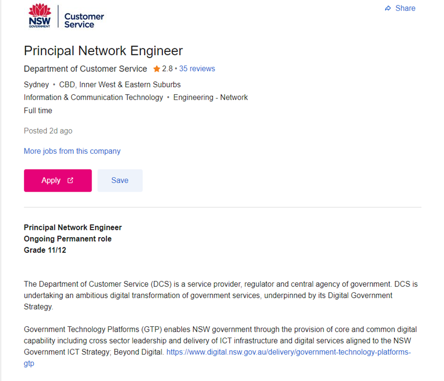

Seek Job Advertisement –
Principal Network Engineer (NSW Gov Customer Service)

The role of a Network Engineer is to design, maintain and construct the connected network of systems used by persons, businesses
and organizations. Their goal is to create an efficient and robust system that will stand the rigors of use and be an asset to the
successful functioning of the client.
This job role appeals to me as from a creative sense, the problem solving, adaptation and physical nature of creating something like
a network gives me great fulfillment. In my present role as an electrician, I can see the growing space that is going to require
networks, from the Internet-of-Things to home automation and expanding need for robust and secure home/business networks. Being able
to tie in my hands on experience in construction and installation with the necessary training and intellectual ability that the design
of these networks requires appeals to me greatly.
A technical background or formal qualification are required for persons entering this role. Some examples include:
- Bachelor of; Computer science, information systems, computer systems or network engineering, electrical or electronic engineering,
mathematics or physics and network or cyber security.
- Technical experience in; computer systems and networks, data installation, network maintenance.
Industry Certifications are also necessary:
- Cisco Certified Network Associate (CCNA)
- Cisco Certified Network Professional (CCNP)
Helpful traits:
- Time management
- Workflow management
- Problem solving
- Communication skills
- Technologically fluent
- Fast learner
I believe I hold many of the traits that are needed for this role. I am able to problem solve and learn quickly, I am able to learn new
skills and technologies quickly, I am a good communicator having worked and competed in teams many times. My areas for improvement in
these non-quantifiable traits are time and workflow management, however I am actively continuing to develop this.
I believe that this course and its association with the Bachelor of IT will bring me close to getting the required formal qualifications
necessary for this role. As I am exposed to new areas of the IT sphere, I will specialize and if need be, switch to a more targeted
degree such as systems or Electrical Engineering.
As I am currently employed the work, I do occasionally overlap to the IT sphere, and I have experience in troubleshooting and installing
data infrastructure, security and CCTV systems and Access Control. Continuing to build on this knowledge is a significant goal and will
give me exposure to the required general experience that a lot of roles ask for.